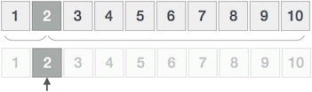

插值查找算法
插值查找算法又称插值搜索算法，是在二分查找算法的基础上改进得到的一种查找算法。
插值查找算法只适用于有序序列，换句话说，它只能在升序序列或者降序序列中查找目标元素。作为“改进版”的二分查找算法，当有序序列中的元素呈现均匀分布时，插值查找算法的查找效率要优于二分查找算法；反之，如果有序序列不满足均匀分布的特征，插值查找算法的查找效率不如二分查找算法。
首先，我们通过一个实例回忆一下二分查找算法的解题思路。例如，在 {1,2,3,4,5,6,7,8,9,10} 升序序列中查找元素 2，二分查找算法的查找过程如下图所示：

图 1 二分查找算法的实现过程
如图 1 所示，先找到搜索区域中的中间元素，然后和目标元素进行比较，如果相同表示查找成功；反之，根据比较结果选择中间元素左侧或右侧的区域作为新的搜索区域，以同样的方式继续查找。
插值查找算法的解题思路和二分查找算法几乎相同，唯一的区别在于，每次与目标元素做比较的元素并非搜索区域内的中间元素，此元素的位置需要通过如下公式计算得出：
为了方便讲解，我们仍将 Mid 位置上的元素称为 "中间元素"。
使用插值查找算法在 {1,2,3,4,5,6,7,8,9,10} 升序序列中查找元素 2，查找过程如下：
1) 假设序列中各个元素的位置为 0~9，搜索区域为整个序列，通过公式计算出 "中间元素" 的位置：
对比图 1 和图 2 不难看出，在 {1, 2, 3, 4, 5, 6, 7, 8, 9, 10} 这个满足均匀分布的升序序列中查找元素 2，插值查找算法的执行效率要优于二分查找算法。
结合伪代码，如下是使用插值查找算法在 {1, 2, 3, 4, 5, 6, 7, 8, 9, 10} 序列中查找元素 2 的 C 语言程序：
如下是使用插值查找算法在 {1, 2, 3, 4, 5, 6, 7, 8, 9, 10} 序列中查找元素 2 的 Java 程序：
如下是使用插值查找算法在 {1, 2, 3, 4, 5, 6, 7, 8, 9, 10} 序列中查找元素 2 的 Python 程序：
以上程序的输出结果均为：
插值查找算法只适用于有序序列，换句话说，它只能在升序序列或者降序序列中查找目标元素。作为“改进版”的二分查找算法，当有序序列中的元素呈现均匀分布时，插值查找算法的查找效率要优于二分查找算法；反之，如果有序序列不满足均匀分布的特征，插值查找算法的查找效率不如二分查找算法。
所谓均匀分布，是指序列中各个相邻元素的差值近似相等。例如，{10, 20, 30, 40, 50} 就是一个均匀分布的升序序列，各个相邻元素的差值为 10。再比如 {100, 500, 2000, 5000} 是一个升序序列，但各相邻元素之间的差值相差巨大，不具备均匀分布的特征。
插值查找算法的解题思路
对于已经学过二分查找算法的读者来说，学习插值查找算法会变得非常容易，因为插值查找算法完全照搬了二分查找算法的解题思路，仅对一些实现细节做了修改。首先，我们通过一个实例回忆一下二分查找算法的解题思路。例如，在 {1,2,3,4,5,6,7,8,9,10} 升序序列中查找元素 2，二分查找算法的查找过程如下图所示：
图 1 二分查找算法的实现过程
如图 1 所示，先找到搜索区域中的中间元素，然后和目标元素进行比较，如果相同表示查找成功；反之，根据比较结果选择中间元素左侧或右侧的区域作为新的搜索区域，以同样的方式继续查找。
插值查找算法的解题思路和二分查找算法几乎相同，唯一的区别在于，每次与目标元素做比较的元素并非搜索区域内的中间元素，此元素的位置需要通过如下公式计算得出：
Mid = Begin + ( (End - Begin) / (A[End] - A[Begin]) ) * (X - A[Begin])
式子中，各部分的含义分别是：- Mid：计算得出的元素的位置；
- End：搜索区域内最后一个元素所在的位置；
- Begin：搜索区域内第一个元素所在的位置；
- X：要查找的目标元素；
- A[]：表示整个待搜索序列。
为了方便讲解，我们仍将 Mid 位置上的元素称为 "中间元素"。
使用插值查找算法在 {1,2,3,4,5,6,7,8,9,10} 升序序列中查找元素 2，查找过程如下：
1) 假设序列中各个元素的位置为 0~9，搜索区域为整个序列，通过公式计算出 "中间元素" 的位置：
Mid = 0 + ( (9-0)/(10-1) ) * (2-1) = 1
"中间元素" 的位置为 1，也就是元素 2，显然这是我们要找的目标元素，查找结束。整个查找过程如下所示：

图 2 插值查找算法的实现过程
图 2 插值查找算法的实现过程
对比图 1 和图 2 不难看出，在 {1, 2, 3, 4, 5, 6, 7, 8, 9, 10} 这个满足均匀分布的升序序列中查找元素 2，插值查找算法的执行效率要优于二分查找算法。
插值查找算法的具体实现
如下用伪代码给大家展示了插值查找算法的具体实现过程：
输入 arr[] // 输入有序序列
输入 ele // 输入查找的目标元素
interpolation_search( arr , begin , end , ele): // [begin,end] 指定搜索区域，ele 为要搜索的目标元素
// [begin,end] 不存在时，返回一个错误值（比如 -1）
if begin > end:
return -1
// [begin,end] 只包含 1 个元素时，判断此元素是否为目标元素
if begin == end:
if ele == arr[begin]:
return begin
else:
return -1
// 找到 [begin,end] 区域“中间值”的下标
mid <- begin + ( (end-begin)/(arr[end] - arr[begin]) * (ele - arr[begin]) )
// 递归的出口，即 ele 和中间元素的值相等
if ele == arr[mid]:
return mid
if ele ＜ arr[mid]: // 比较 ele 和中间元素的值，进一步缩小搜索区域
return binary_search(arr , begin , mid-1 , ele)
else:
return binary_search(arr , mid+1 , end , ele)
结合伪代码，如下是使用插值查找算法在 {1, 2, 3, 4, 5, 6, 7, 8, 9, 10} 序列中查找元素 2 的 C 语言程序：
#include <stdio.h>
//实现插值查找算法，ele 表示要查找的目标元素，[begin,end] 指定查找区域
int interpolation_search(int* arr, int begin, int end, int ele) {
int mid = 0;
//如果[begin,end] 不存在，返回 -1
if (begin > end) {
return -1;
}
//如果搜索区域内只有一个元素，判断其是否为目标元素
if (begin == end) {
if (ele == arr[begin]) {
return begin;
}
//如果该元素非目标元素，则查找失败
return -1;
}
// 找到"中间元素"所在的位置
mid = begin + ((end - begin) / (arr[end] - arr[begin]) * (ele - arr[begin]));
//递归的出口
if (ele == arr[mid]) {
return mid;
}
//比较 ele 和 arr[mid] 的值，缩小 ele 可能存在的区域
if (ele < arr[mid]) {
//新的搜索区域为 [begin,mid-1]
return interpolation_search(arr, begin, mid - 1, ele);
}
else {
//新的搜索区域为 [mid+1,end]
return interpolation_search(arr, mid + 1, end, ele);
}
}
int main()
{
int arr[10] = { 1,2,3,4,5,6,7,8,9,10 };
//输出元素 2 所在位置的下标
int pos = interpolation_search(arr, 0, 9, 2);
if (pos != -1) {
printf("%d", interpolation_search(arr, 0, 9, 2));
}
else {
printf("查找失败");
}
return 0;
}
如下是使用插值查找算法在 {1, 2, 3, 4, 5, 6, 7, 8, 9, 10} 序列中查找元素 2 的 Java 程序：
public class Demo {
// 实现插值查找算法，ele 表示要查找的目标元素，[begin,end] 指定查找区域
public static int interpolation_search(int[] arr, int begin, int end, int ele) {
// 如果[begin,end] 不存在，返回 -1
if (begin > end) {
return -1;
}
//如果搜索区域内只有一个元素，判断其是否为目标元素
if (begin == end) {
if (ele == arr[begin]) {
return begin;
}
//如果该元素非目标元素，则查找失败
return -1;
}
// 找到中间元素所在的位置
int mid = begin + ((end - begin) / (arr[end] - arr[begin]) * (ele - arr[begin]));
// 递归的出口
if (ele == arr[mid]) {
return mid;
}
// 比较 ele 和 arr[mid] 的值，缩小 ele 可能存在的区域
if (ele < arr[mid]) {
// 新的搜索区域为 [begin,mid-1]
return interpolation_search(arr, begin, mid - 1, ele);
} else {
// 新的搜索区域为 [mid+1,end]
return interpolation_search(arr, mid + 1, end, ele);
}
}
public static void main(String[] args) {
int[] arr = new int[] { 1, 2, 3, 4, 5, 6, 7, 8, 9, 10 };
// 输出目标元素 2 所在位置的下标
int add = interpolation_search(arr, 0, 9, 2);
if(add != -1) {
System.out.print(add);
}else {
System.out.print("查找失败");
}
}
}
如下是使用插值查找算法在 {1, 2, 3, 4, 5, 6, 7, 8, 9, 10} 序列中查找元素 2 的 Python 程序：
#实现插值查找算法，ele 表示要查找的目标元素，[begin,end] 指定查找区域
def interpolation_search(arr,begin,end,ele):
#如果[begin,end] 不存在，返回 -1
if begin > end:
return -1
if begin == end:
if arr[begin] == ele:
return begin
return -1
#找到中间元素所在的位置
mid = int(begin + ((end - begin) / (arr[end] - arr[begin]) * (ele - arr[begin])))
#递归的出口
if ele == arr[mid]:
return mid
#比较 ele 和 arr[mid] 的值，缩小 ele 可能存在的区域
if ele < arr[mid]:
return interpolation_search(arr,begin,mid-1,ele)
else:
return interpolation_search(arr,mid+1,end,ele)
arr = [1,2,3,4,5,6,7,8,9,10]
#输出元素 2 所在位置的下标
add = interpolation_search(arr, 0, 9, 2);
if add != -1:
print(add)
else:
print("查找失败")
以上程序的输出结果均为：
1
关注公众号「站长严长生」，在手机上阅读所有教程，随时随地都能学习。本公众号由C语言中文网站长亲自运营，长期更新，坚持原创。

微信扫码关注公众号